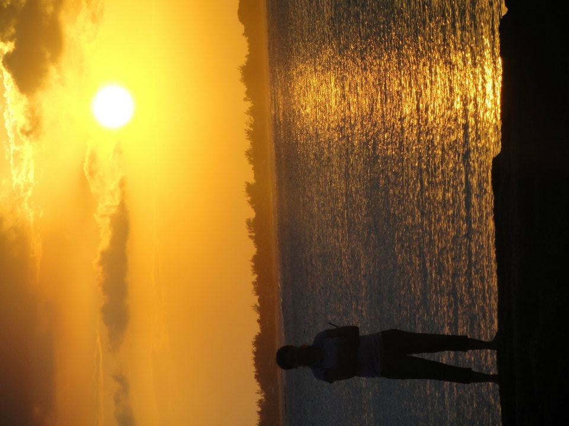

Aarthi Anbalagan's dream moments
Honors
These were a few happy moments in my life.
- Stood first among 71000 students in my 12th grade, in my county
- Stood first in my University in undergrad, and received gold medal from His excellency Dr. Surjeet Singh Parnala, ex-governor of state, Tamilnadu, India
- JN Tata Memorial Endowment awardee, 2016
- Foundations of GE Leadership, 2015
- Recipient of CRA-W grad cohort scholarship, 2017
Jack of all trades, trying to master some! :)
Contributed towards improving my communication skills, especially while working for college magazine "Srishti". I have contributed in designing a few pages, in editing and also an article on Page 63.
Playing shuttle and mountain biking is my favorite pastime and also a way to de-stress and refresh myself for new challenges. On the way, I won in Shuttle and basketball for my school, university, in Nokia and in GE corporate tournaments.
Volunteering
Volunteering helped me to be a good citizen of the world. Even from my college, I was part of philanthropic group "Vidiyal". Vidiyal is a student body, which is formed by student volunteers in CIT. It's main aim is to educate children from economically backward communities around Coimbatore. As part of this, we used to visit school children in "Economically backward" societies, and teach them subjects like Maths, Science. In 2014, they recently launched a documentary named Vidiyal. Also, once I started working as Software Engineer, we formed a formal educational charitable trust, EnMakkal, which works towards child empowerment in India. Reading novels, helped me gain insight into variety of general knowledge.Favorite authors: Dan Brown, JK Rowling, Charles Dickens, R.L.Stevenson etc.
Travel
Travelling the world is my dream. And photography is my passion.
A few random clicks..




Stay tuned. More to come!